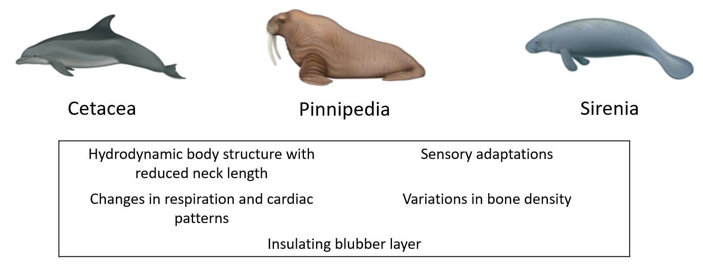
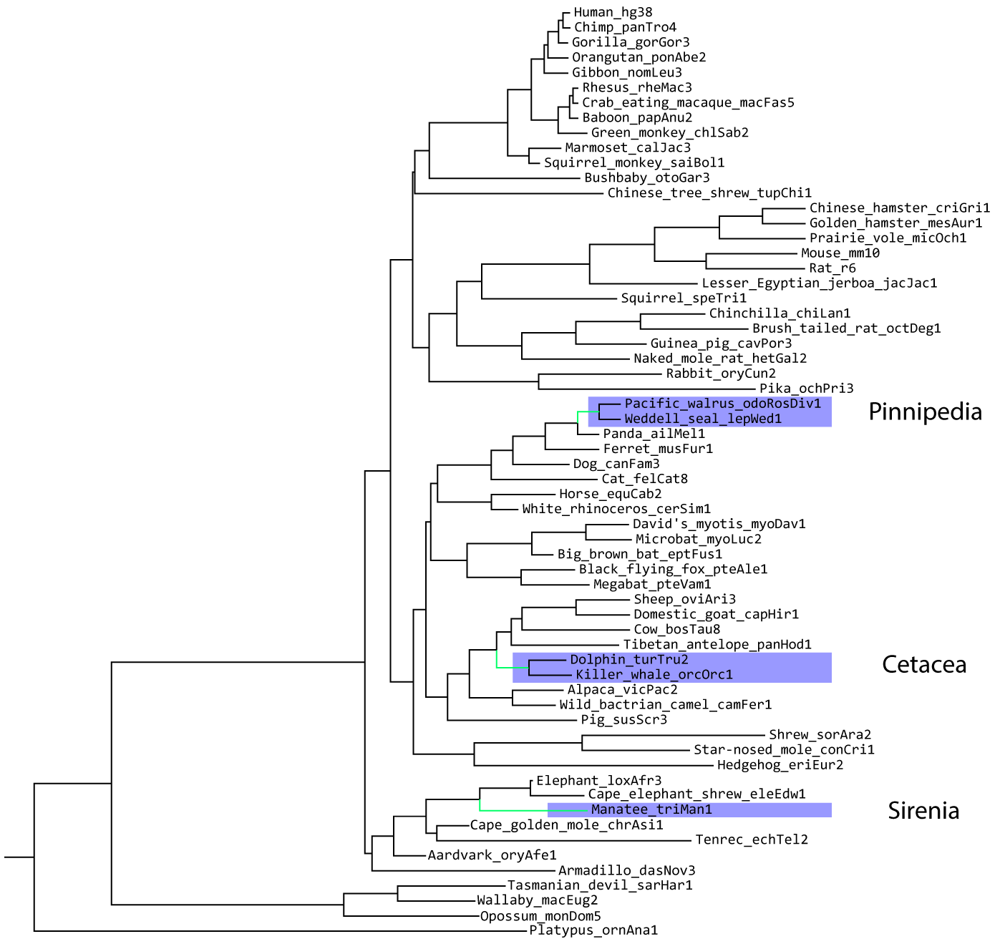

Today, we're going to use PhyloAcc to investigate conserved non-coding regions of marine mammal genomes that may play a role in their convergent adapations to aquatic habitats. Marine mammals have broad phenotypic convergence among many traits, making them an interesting study system for linking genotype to phenotype using comparative methods.

We'll be using the UCSC Genome Browser's 100 mammal whole genome alignment, pruned down to 62 mammals:

From this alignment, the authors of the original PhyloAcc paper predicted conserved non-coding regions using a method called PhastCONS (Paper). In total, they identified 283,369 total conserved non-coding regions and used PhyloAcc to identify about 800 that are accelerated in marined mammals
Today, in the interested of time, we'll be using a subset of ~2,000 elements that includes the original 800 identfied as being accelerated in marine mammals to re-create some of their analyses.
Let's go ahead and take a look at some of PhyloAcc's input data. I've placed the data in a public folder on the
server at the following path: /n/holylfs05/LABS/informatics/Everyone/support/20251021-sedwards-phyloacc/
Let's see the files in this folder using the list directory contents command, ls:
ls /n/holylfs05/LABS/informatics/Everyone/support/20251021-sedwards-phyloacc/| Command line parameter | Description |
|---|---|
| ls | The list directory contents command. |
| /n/holylfs05/LABS/informatics/Everyone/support/20251021-sedwards-phyloacc/ | The path to the directory whose contents we want to see. |
For me, this displays the following content, two files and one directory (named seq):
mammal_acc1.mod seq tree_coal_unit.modPhyloAcc requires 3 pieces of information for its most general input:
- The aligned sequences to analyze in FASTA format
- The neutral rates of evolution as a baseline
- The phylogenetic tree in Newick format
Other run modes might require other pieces of information, such as a BED file that denotes partitions in a concatenated alignment, or a tree with branch lengths in coalescent units.
Our aligned sequences are in the seq/ folder. Let's look at one:
cat /n/holylfs05/LABS/informatics/Everyone/support/20251021-sedwards-phyloacc/seq/chr10-108.fa| Command line parameter | Description |
|---|---|
| cat | The command to print the contents of a file to the screen. |
| /n/holylfs05/LABS/informatics/Everyone/support/20251021-sedwards-phyloacc/seq/chr10-108.fa | The path to the file you want to print. |
This should look something like this on your screen, and you can scroll up and down to see the other sequences:
>oryAfe1
TTTTTTCCTTGTTTCTAACTTTCCCATAAAAAGATTCAGGTAAATGTAGCATGACGAGCCAATTTAAGCCAATTTCAAAGTTATTTGAGTAATTGGTTATTAAGATAACAGTCTCAAATTTCAATTCAGCAATTATTGTCTTAAAGACACGGA
>dasNov3
TTTTTT-CTTGTTCCTAACTTTCCCATAAAAAGATCCAGGTAAATGTAGCATGACGAGCCAATTTAAGCCAATTTCAGTGTTATTTGAGTAATTGGTTATTAAGATAACAGTCTCAAATTTCAATCCAGCAATTATTGTCTTAAAGTCACAGA
>monDom5
CTTTTTTTTTGTTCCTAACTTTCTCATAAAAAGATTCAGGTAAATGTAGCATGACGAGCCAATTGAAGCCAATTTCAAAGTTATTTGAGTAATTGGTTATTAAGATAACACTCTCAAATTCCAATTCTGCAATTATCCTCTTAAAGATACAGA
>sarHar1
TTTTTTTTTTGTTCCTAACTTTCTCATAAAAAGATTCAGGTAAATGTAGCATGACGAGCCAATTTAAGCCAATTTCAAAGTTATTTGAGTAATTGGTTATTAAGATAACACTCTCAAATTCCAATTCAGCAATTATCCTCTTAAAGATACAGA
>macEug2
NNNNNNNNNNNNNNNNNNNNNNNNNNNNNNNNNNNNNNNNNNNNNNNNNNNNNNNNNNNNNNNNNNNNNNNNNNNNNNNNNNNNNNNNNNNNNNNNNNNNNNNNNNNNNNNNNNNNNNNNNNNNNNNNNNNNNNNNNNNNNNNNNNNNNNNNN
>ornAna1
TTTTTTTTCTGTTCCTAACTTTCCCATAAAAAGATTCAGGTAAATGTAGCATGACGAACCAATTTAAGCCAATTTCAAAGTTATTTGAGTAATTGGTTATTAAGATAACACTCTCAAATTTCCATTCGGCAATTATCTTCTTAAAGATACAGAThere are a total of 2,030 of these files in that directory that will be analyzed with PhyloAcc.
What about the other two pieces of input? The tree and the neutral substitution rates. They can both be found in the
mammal_acc1.mod file, which is the output of running phyloFit
on 4-fold degenerate sites.
This file looks like this:
cat /n/holylfs05/LABS/informatics/Everyone/support/20251021-sedwards-phyloacc/mammal_acc1.mod| Command line parameter | Description |
|---|---|
| cat | The command to print the contents of a file to the screen. |
| /n/holylfs05/LABS/informatics/Everyone/support/20251021-sedwards-phyloacc/mammal_acc1.mod | The path to the file you want to print. |
ALPHABET: A C G T
ORDER: 0
SUBST_MOD: REV
BACKGROUND: 0.246000 0.254000 0.254000 0.246000
RATE_MAT:
-1.075162 0.186970 0.696268 0.191923
0.181082 -0.873473 0.255492 0.436899
0.674340 0.255493 -1.164645 0.234813
0.191924 0.451108 0.242449 -0.885481
TREE: (((((((((((((hg38:0.00635811,panTro4:0.00639727)hg38-panTro4:0.00214587,gorGor3:0.00871122)hg38-gorGor3:0.00953503,ponAbe2:0.0183964)hg38-ponAbe2:0.00336551,nomLeu3:0.0213327)hg38-nomLeu3:0.0110901,(((rheMac3:0.0028622,macFas5:0.00197199)rheMac3-macFas5:0.0050833,papAnu2:0.00751373)rheMac3-papAnu2:0.0040709,chlSab2:0.0122377)rheMac3-chlSab2:0.0255202)hg38-rheMac3:0.0208042,(calJac3:0.0333897,saiBol1:0.0323178)calJac3-saiBol1:0.0347897)hg38-calJac3:0.0650259,otoGar3:0.152902)hg38-otoGar3:0.0175657,tupChi1:0.187728)hg38-tupChi1:0.00510076,(((speTri2:0.140811,(jacJac1:0.185825,((micOch1:0.109359,(criGri1:0.054378,mesAur1:0.0666414)criGri1-mesAur1:0.0360916)micOch1-criGri1:0.0282033,(mm10:0.0855261,rn6:0.0922028)mm10-rn6:0.0652661)micOch1-mm10:0.116838)jacJac1-micOch1:0.0569671)speTri2-jacJac1:0.00771378,(hetGla2:0.0893915,(cavPor3:0.119187,(chiLan1:0.0829668,octDeg1:0.122014)chiLan1-octDeg1:0.0152716)cavPor3-chiLan1:0.0266244)hetGla2-cavPor3:0.105307)speTri2-hetGla2:0.0272505,(oryCun2:0.110274,ochPri3:0.195376)oryCun2-ochPri3:0.104344)speTri2-oryCun2:0.0129379)hg38-speTri2:0.0212441,(((susScr3:0.124351,((vicPac2:0.0166038,camFer1:0.0158169)vicPac2-camFer1:0.0985397,((turTru2:0.00615913,orcOrc1:0.00529173)turTru2-orcOrc1:0.0574423,(panHod1:0.017308,(bosTau8:0.0505552,(oviAri3:0.0125618,capHir1:0.0120594)oviAri3-capHir1:0.00662765)bosTau8-oviAri3:0.0017629)panHod1-bosTau8:0.112657)turTru2-panHod1:0.0224037)vicPac2-turTru2:0.00440398)susScr3-vicPac2:0.0445492,(((equCab2:0.0801931,cerSim1:0.0618011)equCab2-cerSim1:0.0347784,(felCat8:0.0887721,(canFam3:0.0890799,(musFur1:0.091856,(ailMel1:0.0607956,(odoRosDiv1:0.0259317,lepWed1:0.0233111)odoRosDiv1-lepWed1:0.0279745)ailMel1-odoRosDiv1:0.00450724)musFur1-ailMel1:0.0200318)canFam3-musFur1:0.0210109)felCat8-canFam3:0.0518729)equCab2-felCat8:0.00483835,((pteAle1:0.00745471,pteVam1:0.00849452)pteAle1-pteVam1:0.105708,(eptFus1:0.0398389,(myoDav1:0.0277149,myoLuc2:0.0160484)myoDav1-myoLuc2:0.0236592)eptFus1-myoDav1:0.104754)pteAle1-eptFus1:0.0341993)equCab2-pteAle1:0.00373968)susScr3-equCab2:0.0122512,(eriEur2:0.245692,(sorAra2:0.288669,conCri1:0.163421)sorAra2-conCri1:0.0166079)eriEur2-sorAra2:0.0360627)susScr3-eriEur2:0.0230746)hg38-susScr3:0.0223121,(((((loxAfr3:0.0902075,eleEdw1:0.225293)loxAfr3-eleEdw1:0.00281432,triMan1:0.0759834)loxAfr3-triMan1:0.016517,(chrAsi1:0.145989,echTel2:0.232419)chrAsi1-echTel2:0.0223786)loxAfr3-chrAsi1:0.00370578,oryAfe1:0.117489)loxAfr3-oryAfe1:0.055983,dasNov3:0.160081)loxAfr3-dasNov3:0.0071811)hg38-loxAfr3:0.24482,(monDom5:0.135945,(sarHar1:0.12595,macEug2:0.17055)sarHar1-macEug2:0.0276415)monDom5-sarHar1:0.21065)hg38-monDom5:0.0768943,ornAna1:0.501668)hg38-ornAna1;With these files as input, we can now run PhyloAcc!